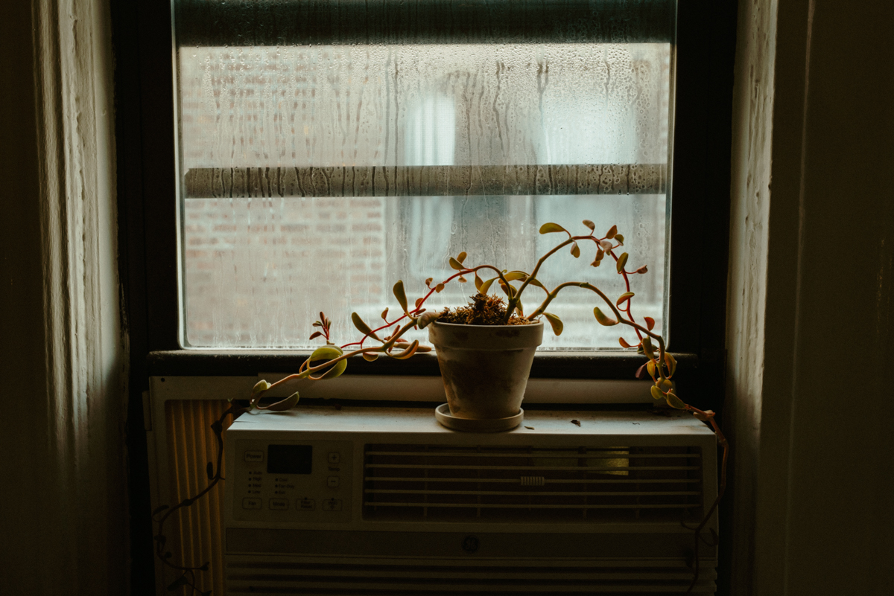
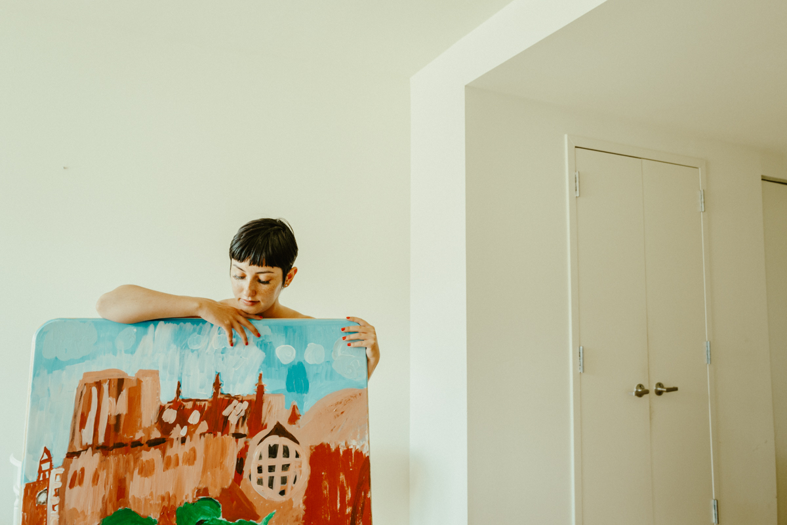
“If you like literature, we’ll have plenty to talk about (when we aren’t snuggling, anyway.) I have my Bachelor of Arts in English and I even keep a blog about my life experiences.”
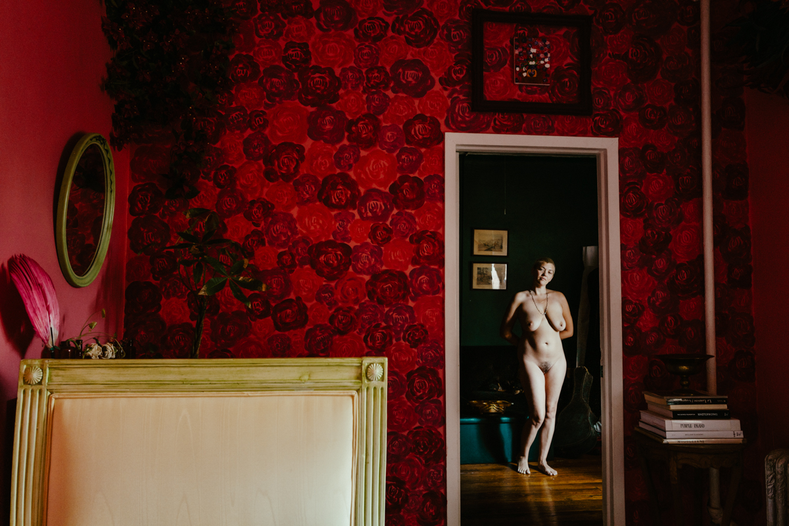
Ongoing project
“I live to connect, enjoy, and create. Spend a little time with me, I’ll show you what I mean. Artist, designer, reiki master.”
“Healers: Sex Work as a Calling” gives the viewer an intimate new perspective into the lives of those who chose this profession, humanizing what has been stigmatized and ostracized for centuries. Sex work is not only work; for many, it can offer healing from sexual trauma or gender dysphoria, or provide something so innate to humankind yet so taboo: sexual pleasure.


“If you like literature, we’ll have plenty to talk about (when we aren’t snuggling, anyway.) I have my Bachelor of Arts in English and I even keep a blog about my life experiences.”
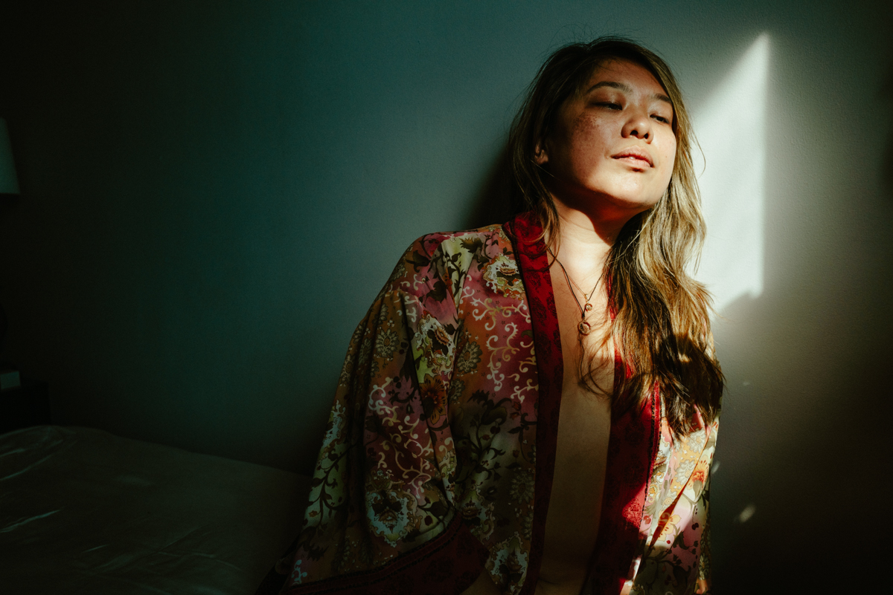
“Designer, domme, daddy — in no particular order.”
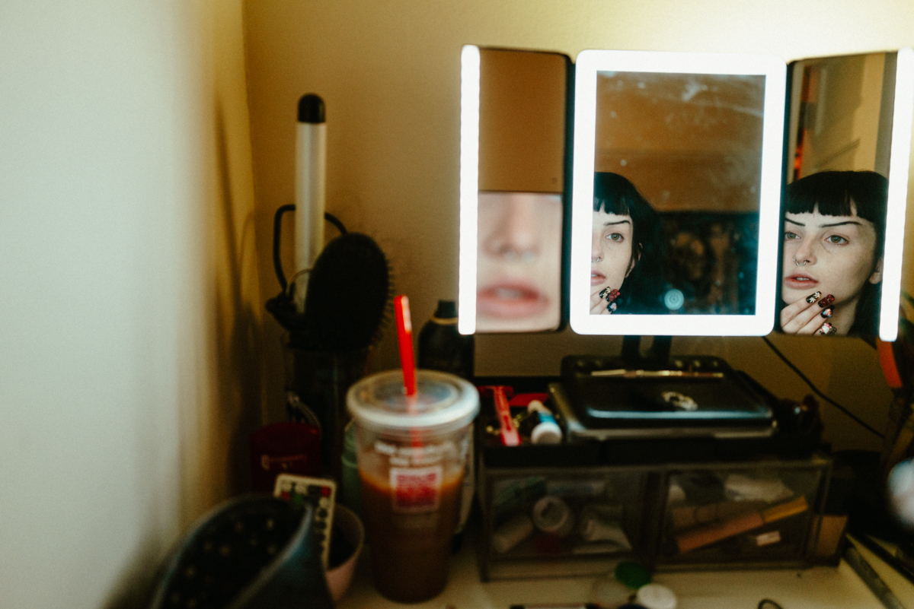
“Artist, anarchist, stripper.”
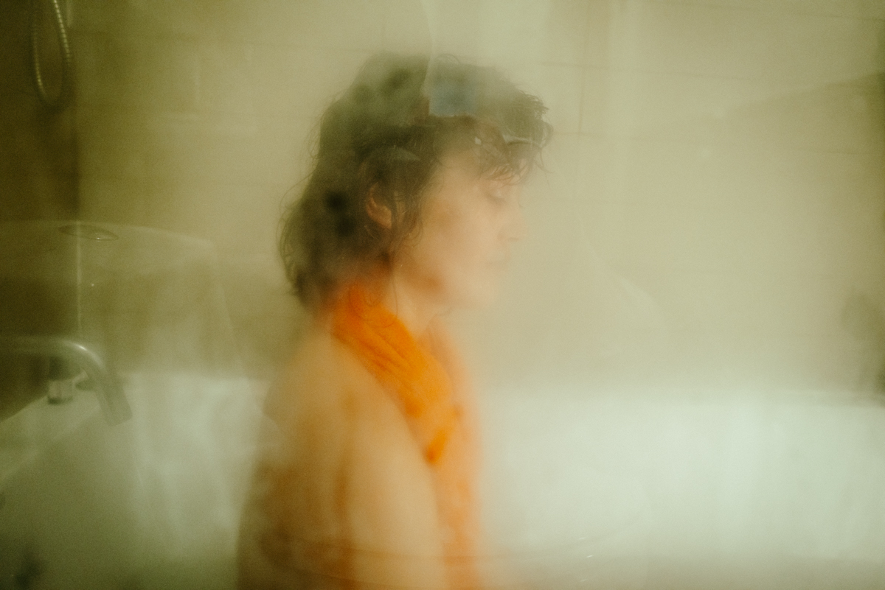
“I am a very creative woman who is confident and uninhibited with a sweet and compassionate soul.”
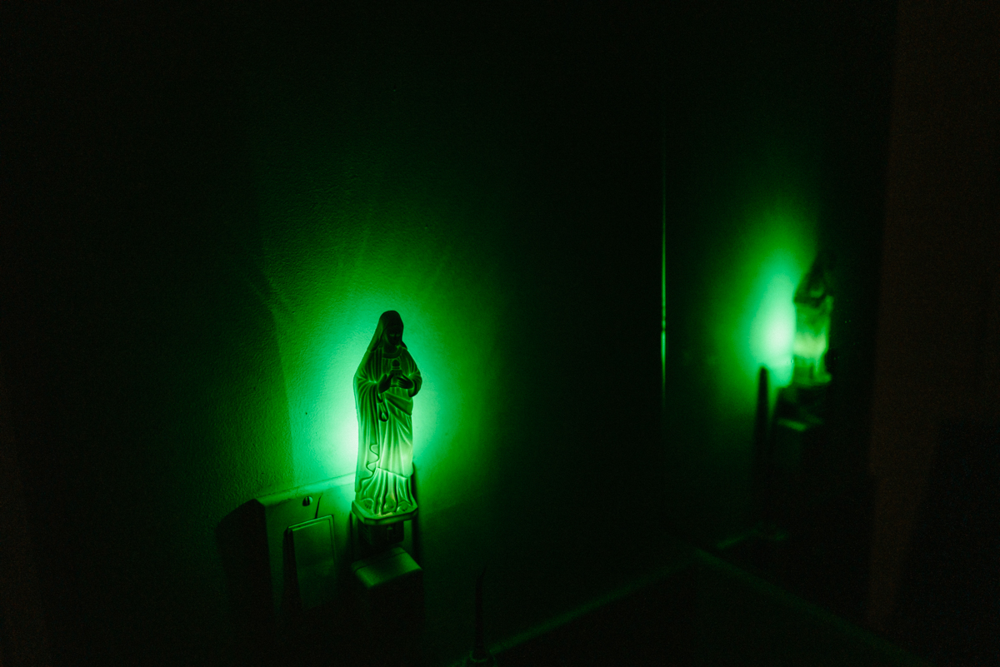
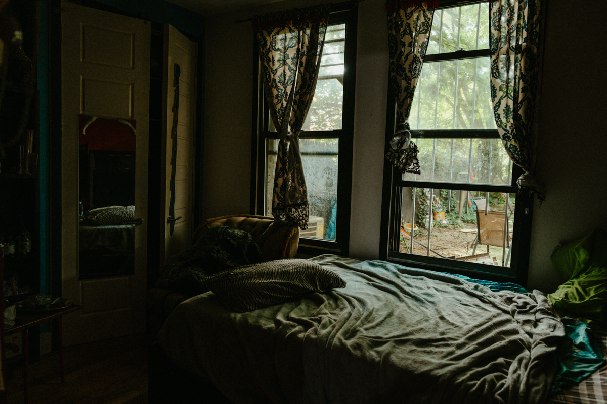
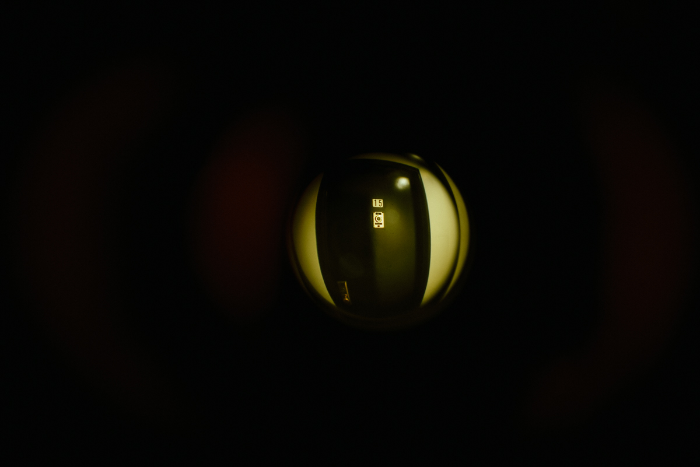
“Artist, shamanic healer, tantrika practitioner and mentor.”
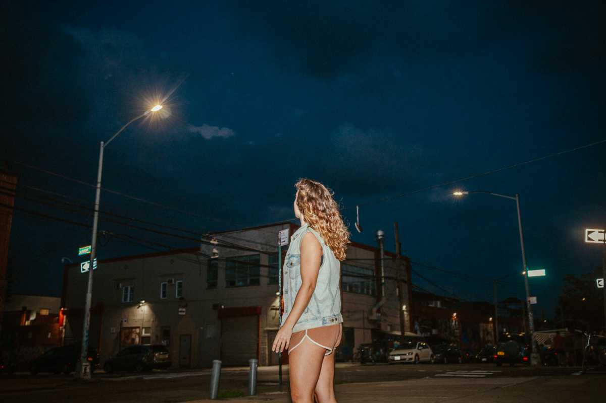
“Stripper, aerialist, performer. Barcelona, NYC, California.”
“I became a nurse’s assistant to put myself through college, where I studied the arts and became a parent. I spent 15+ years working in end-of-life care and oncology.”
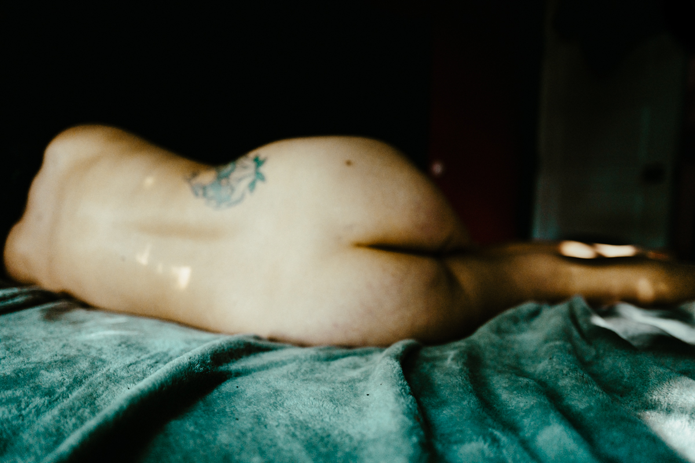
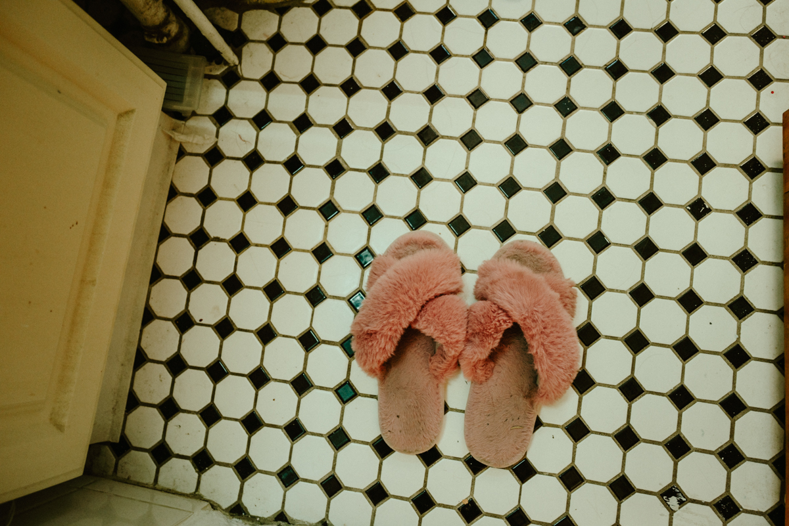
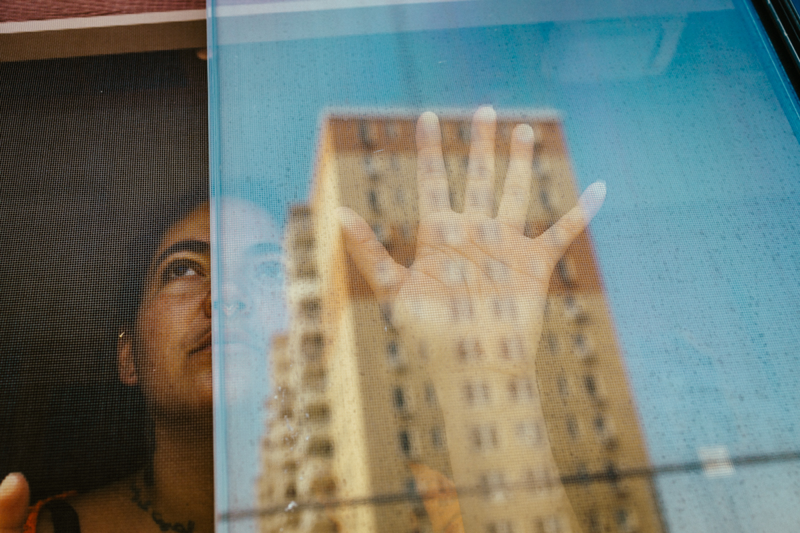
“I’m a traveling woman with many talents. I am a pro-cuddler; I wrestle naughty boys. Fierce yet sweet, Bachelor’s Degree in social-psych, so I’m a great listener too!”
“If you are looking for a purely physical connection, I respectfully am not the one for you.”
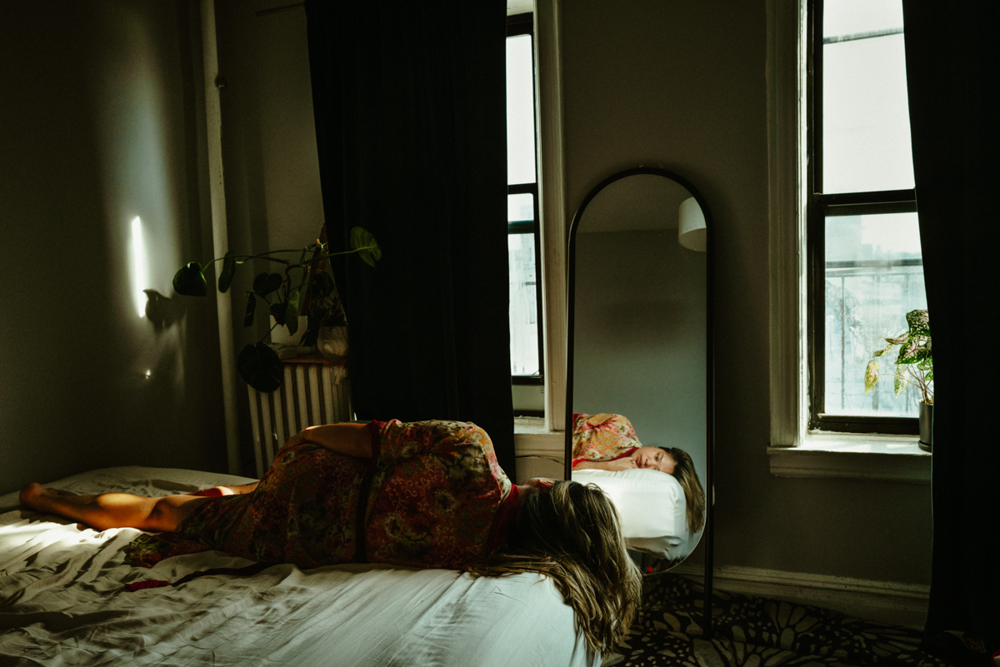
This body of work is an homage to everyone in this profession: to those who fought and keep on fighting for decriminalization, and to those who constantly fear being arrested, deported, or having their children taken away from them. This constant fear and exposure to violence is why Human Rights Watch supports the full decriminalization of sex work. Since 2021, New York City became the first city in the United States to no longer prosecute sex work; hopefully, more will follow.
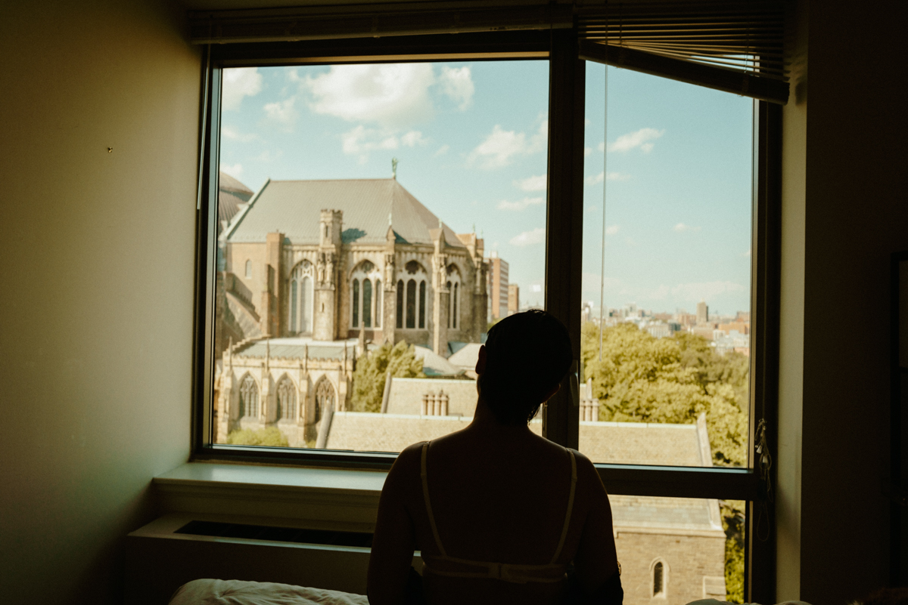